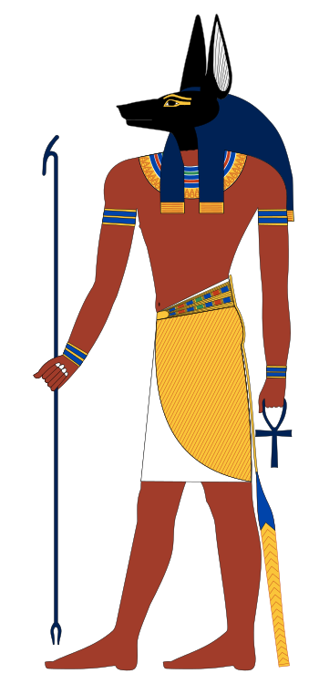

Anúbis
Anúbis ([əˈnjuːbᵻs]; em grego clássico: Ἄνουβις) ou Anupo é, no panteão do Antigo Egito, o deus dos mortos e moribundos, que guiava e conduzia as almas ao mundo dos mortos. É representado com cabeça de chacal, embora os egiptólogos mais conservadores afirmem que não há como saber com certeza o animal que o representa. É associado com a mumificação e a vida após a morte na mitologia egípcia, também associado como protetor das pirâmides. Na língua egípcia, Anúbis era conhecido como Inpu (também grafado Anup, Anpu e Ienpw). A menção mais antiga a Anúbis está nos Textos das Pirâmides do Império Antigo, onde frequentemente é associado com o enterro do Faraó. Na época, Anúbis era o deus dos mortos mais importante, porém durante o Império Médio, Osíris passou a ter a função de deus primordial dos mortos, enquanto que Anúbis tinha funções menores como por exemplo o preparo do corpo e embalsamento dos mortos, além disso era o protetor do processo de mumificação. Assume nomes ligados ao seu papel fúnebre, como Aquele que está sobre a sua montanha, que ressalta sua importância como protetor dos mortos e de suas tumbas, e o título Aquele que está no local do embalsamamento, associando-o com o processo de mumificação. Como muitas divindades egípcias, Anúbis assumiu diversos papéis em vários contextos, e nenhuma procissão pública no Egito era realizada sem uma representação de Anúbis marchando em seu início. A esposa de Anúbis é a deusa Anput, seu aspecto feminino, e a sua filha é a deusa Kebechet. Os egípcios acreditavam que no julgamento de um morto o coração dele era pesado numa balança e a Pena da Verdade (que pertencia à consorte de Toth, Maat, a deusa da verdade). Caso o coração fosse mais pesado que a pena o defunto era comido por Ammit (um demônio cujo corpo era composto por partes híbridas de leão, hipopótamo e crocodilo), mas caso fosse mais leve a pessoa em questão poderia ter acesso ao paraíso ou a alma voltaria ao corpo. Anúbis era quem guiava a alma dos mortos.
Iconografia
O antigo Egito é uma civilização que dava grande importância às imagens. Com seus cerca de 700 escrituras hierograficas sua escrita facilmente demonstra isso. Essa arte do desenho (ou iconografia ) também é perceptível no imaginário do mundo divino. A aparição do deus Anúbis, simbolizado por um canino, é certamente ditada por suas funções funerárias ; chacais e cães assombrando e guardando cemitérios à beira dos desertos.
Canino divino
Animal icônico
Como outras divindades funerárias egípcias, como Upouaout, Khentyimentiou e Sed, Anubis pertence ao grupo das divindades caninas. A morfologia geral de Anubis em sua forma inteiramente animal, com seu focinho pontiagudo, suas duas orelhas eretas, seu torso esguio, suas quatro patas longas e sua cauda alongada, indica claramente que é um membro da família Canidae que na África Oriental inclui lobos, chacais, raposas, cães selvagens e cães domésticos. No entanto, a combinação de elementos morfológicos de Anubis não corresponde a nenhuma espécie conhecida de canídeo ainda existente. O emblema animal do deus parece muito mais uma mistura de vários tipos. Enquanto a cabeça e o focinho correspondem a uma ampla variedade de canídeos, as orelhas pontudas são em sua maioria parecidas com as da raposa, enquanto o corpo esguio lembra o galgo. A cauda de Anúbis se assemelha à do chacal, mas é muito mais longa e estreita ; a cauda da raposa, se cair no chão como a de Anúbis, é muito mais volumosa e grossa. Além disso, Anubis é na maioria das vezes representado com pelagem preta, uma cor bastante incomum entre as várias espécies de canídeos. Ao longo XX século XX Século XX, muitos especialistas estimam que o animal de Anúbis é um ser híbrido, cão-lobo, lobo-chacal, chacal-cão, etc. Segundo George Hart, escritor e conferencista do Museu Britânico "o cão Anubis é provavelmente um chacal[...] Mas outros cães, por exemplo o pária cor de ferrugem, podem ter servido como protótipo. Anubis talvez represente o epítome dos cães do deserto". A assimilação de Anubis ao chacal é baseada em um critério comportamental: este canino noturno é conhecido por assombrar cemitérios à noite, e mais particularmente em torno de sepulturas recém-cavadas, a fim de desenterrar e devorar cadáveres. Esse comportamento teria sido associado pelos antigos egípcios à morte e, por extensão, à mumificação e às cerimônias fúnebres. A cor preta de Anubis é um símbolo explicado principalmente de duas maneiras : primeiro pela coloração negra do corpo do defunto sob o efeito das resinas utilizadas no embalsamamento, depois pela associação da cor preta com o conceito de regeneração, a cheia do Nilo trazendo, todos os anos, lodo negro e fértil em terras agrícolas.
Chacal
O chacal, no entanto, não é o único canídeo a vagar pelos cemitérios, já que raposas e hienas fazem o mesmo. Os canídeos, se diferirem fisicamente, têm, no entanto, certos comportamentos comuns. Uma das mais marcantes é se afastar e depois esconder a comida enterrando o excesso quando é impossível consumir tudo ali. Esse comportamento inato segue invariavelmente o mesmo padrão estereotipado. O animal primeiro se afasta com um resto de carne na boca, a fim de encontrar um local adequado para o enterro. Para encontrar o local certo, periodicamente fareja o chão e arranha a terra com uma das patas dianteiras. Uma vez encontrado um local adequado, ele cava um buraco cada vez mais rápido, usando as duas patas dianteiras alternadamente. A carne é então depositada na escavação, por vezes sendo empurrada repetidamente com a ponta do focinho. O animal então preenche o buraco empurrando a terra escavada e batendo nela com o focinho. No final da operação, apenas uma leve agitação do solo permanece visível, e o animal se afasta, para retornar um ou dois dias depois para encontrar e consumir a carne enterrada. Os antigos egípcios certamente não deixaram de notar esse comportamento em seus cães de caça ou nos caninos que conheciam, como o chacal dourado ( Canis aureus ), a raposa vermelha ( Vulpes vulpes ), o feneco ( Vulpes zerda ) ou o selvagem africano. Cão ( Lycaon pictus ). O deus Anúbis pode ter sido representado na forma canina por causa desse comportamento escavador, sendo o principal papel de uma divindade funerária esconder os restos mortais da vista dos vivos.
Mumificação
Após ser despedaçado pelo irmão, Seti, Osíris tem seu corpo embalsamado por Anúbis, tornando-o a primeira múmia, e fazendo com que se torne o deus do embalsamento. Os sacerdotes de Anúbis, chamados stm, usavam máscaras de chacais durante os rituais de mumificação. Anúbis é uma das mais antigas divindades da mitologia egípcia e seu papel mudou à medida que os mitos amadureciam, passando de principal deus do mundo inferior a juiz dos mortos, depois que Osíris assumiu aquele papel. O papel funerário de Anúbis é muito importante, pois depois da mumificação os egípcios acreditavam que o coração era entregue ao deus Anúbis; ele pesava-o em conjunto com a Pena da Verdade: se o coração fosse mais pesado que a pena, era pesado de maldade e Ammit, o deus-leão, comia-o; mas se fosse leve de bondade, Anúbis levava-o num barco a atravessar o rio Nilo para ir ter com o deus Osíris, deus da morte e do submundo, ao mundo dos mortos, para viver a "vida depois da morte"
Família
A sua mãe é Néftis, que durante uma briga com o marido Seti passou-se por Ísis e teve relações com Osíris. Anúbis é pai de Qeb-hwt, também conhecido como Kebechet. Em épocas mais tardias, Anúbis foi combinado com o deus grego Hermes,surgindo assim Hermanúbis.
Anúbis

Nome nativo: Inpu
Local de culto: Cinópolis
Cônjuge: Anput